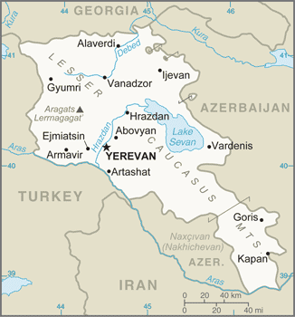
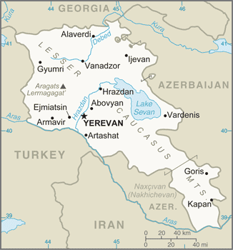

country name
- conventional long form: Republic of Armenia
- conventional short form: Armenia
- local long form: Hayastani Hanrapetut'yun
- local short form: Hayastan
- former: Armenian Soviet Socialist Republic, Armenian Republic
- etymology: the etymology of the country's name remains obscure; according to tradition,
the country is named after Hayk, the legendary patriarch of the Armenians and the
great-great-grandson of Noah; Hayk's descendant, Aram, purportedly is the source of
the name Armenia
government type
parliamentary democracy; note - constitutional changes adopted in December 2015 transformed
the government to a parliamentary system
capital
- name: Yerevan
- geographic coordinates: 40 10 N, 44 30 E
- time difference: UTC+4 (9 hours ahead of Washington, DC, during Standard Time)
- etymology: name likely derives from the ancient Urartian fortress of Erebuni established
on the current site of Yerevan in 782 B.C. and whose impresive ruins still survive
administrative divisions
11 provinces (marzer, singular - marz); Aragatsotn, Ararat, Armavir, Geghark'unik',
Kotayk', Lorri, Shirak, Syunik', Tavush, Vayots' Dzor, Yerevan
independence
21 September 1991 (from the Soviet Union); notable earlier dates: 321 B.C. (Kingdom
of Armenia established under the Orontid Dynasty), A.D. 884 (Armenian Kingdom reestablished
under the Bagratid Dynasty); 1198 (Cilician Kingdom established); 28 May 1918 (Democratic
Republic of Armenia declared)
national holiday
Independence Day, 21 September (1991)
constitution
- history: previous 1915, 1978; latest adopted 5 July 1995
- amendments: proposed by the president of the republic or by the National Assembly;
passage requires approval by the president, by the National Assembly, and by a referendum
with at least 25% registered voter participation and more than 50% of votes; constitutional
articles on the form of government and democratic procedures are not amendable; amended
2005, 2007, 2008, 2015 (2017)
- note: a 2015 amendment, approved in December 2015 by a public referendum and effective
for the 2017-18 electoral cycle, changes the government type from the current semi-presidential
system to a parliamentary system
legal system
civil law system
international law organization participation
has not submitted an ICJ jurisdiction declaration; non-party state to the ICCt
citizenship
- citizenship by birth: no
- citizenship by descent only: at least one parent must be a citizen of Armenia
- dual citizenship recognized: yes
- residency requirement for naturalization: 3 years
suffrage
18 years of age; universal
executive branch
- chief of state: President Armen SARKISSIAN (since 9 April 2018)
- head of government: Prime Minister Nikol PASHINYAN (since 8 May 2018); Deputy Prime
Ministers Mher GRIGORYAN and Tigran AVINYAN (since 16 January 2019)
- cabinet: Council of Ministers appointed by the prime minister
- elections/appointments: president indirectly elected by the National Assembly in 3
rounds if needed for a single 7-year term; election last held on 2 March 2018; prime
minister elected by majority vote in 2 rounds if needed by the National Assembly;
election last held on 14 January 2019
- election results: Armen SARKISSIAN elected president in first round; note - Armen
SARKISSIAN ran unopposed and won the Assembly vote 90-10; Nikol PASHINYAN was chosen
as prime minister by the parliament automatically after his party won a landslide
victory in the December 2018 elections
- note: After initially winning election on 8 May 2018, Nikol PASHINYAN resigned his
post (but stayed on as acting prime minister) on 16 October 2018 to force a snap election
(held on 9 December 2018) in which his bloc won more than 70% of the vote; PASHINYAN
was reappointed prime minister on 14 January 2019
legislative branch
- description: unicameral National Assembly (Parliament) or Azgayin Zhoghov (minimum
101 seats, currently 132; members directly elected in single-seat constituencies by
proportional representation vote; members serve 5-year terms)
- elections: last held on 9 December 2018 (next elections to be held December 2023)
- election results: percent of vote by party - My Step Alliance 70.4%, BHK 8.3%, Bright
Armenia 6.4%, RPA 4.7%, ARF 3.9%, other 6.3%; seats by party - My Step Alliance 88,
BHK 26, Bright Armenia 18; composition - men 112, women 20, percent of women 15.2%
judicial branch
- highest courts: Court of Cassation (consists of the Criminal Chamber with a chairman
and 5 judges and the Civil and Administrative Chamber with a chairman and 10 judges
– with both civil and administrative specializations); Constitutional Court (consists
of 9 judges)
- judge selection and term of office: Court of Cassation judges nominated by the Supreme
Judicial Council, a 10-member body of selected judges and legal scholars; judges appointed
by the president; judges can serve until age 65; Constitutional Court judges - 4 appointed
by the president, and 5 elected by the National Assembly; judges can serve until age
70
- subordinate courts: criminal and civil appellate courts; administrative appellate
court; first instance courts; specialized administrative and bankruptcy courts
political parties and leaders
Armenian National Congress or ANC (bloc of independent and opposition parties) [Levon
TER-PETROSSIAN] Armenian Revolutionary Federation or ARF ("Dashnak" Party) [Hakob
TER-KHACHATURYAN] Bright Armenia [Edmon MARUKYAN] Citizen's Decision [Suren SAHAKYAN]
Civil Contract [Nikol PASHINYAN] Free Democrats [Khachatur KOKOBELYAN] Heritage Party
[Raffi HOVANNISIAN] Prosperous Armenia or BHK [Gagik TSARUKYAN] Republic [Aram SARGSYAN]
Republican Party of Armenia or RPA [Serzh SARGSIAN] Rule of Law Party (Orinats Yerkir)
or OEK [Artur BAGHDASARIAN] Sasna Tser [Varuzhan AVETISYAN]
international organization participation
ADB, BSEC, CD, CE, CIS, CSTO, EAEC (observer), EAEU, EAPC, EBRD, FAO, GCTU, IAEA,
IBRD, ICAO, ICC (NGOs), ICRM, IDA, IFAD, IFC, IFRCS, ILO, IMF, Interpol, IOC, IOM,
IPU, ISO, ITSO, ITU, MIGA, NAM (observer), OAS (observer), OIF, OPCW, OSCE, PFP, UN,
UNCTAD, UNESCO, UNIDO, UNIFIL, UNWTO, UPU, WCO, WFTU (NGOs), WHO, WIPO, WMO, WTO
diplomatic representation in the us
- Ambassador Varuzhan NERSESSYAN (since 11 January 2019)
- chancery: 2225 R Street NW, Washington, DC 20008
- telephone: [1] (202) 319-1976
- FAX: [1] (202) 319-2982
- consulate(s) general: Glendale (CA)
diplomatic representation from the us
- chief of mission: Ambassador Lynne M. TRACEY (since 5 March 2019)
- telephone: [374](10) 464-700
- embassy: 1 American Ave., Yerevan 0082
- mailing address: American Embassy Yerevan, US Department of State, 7020 Yerevan Place,
Washington, DC 20521-7020
- FAX: [374](10) 464-742
flag description
three equal horizontal bands of red (top), blue, and orange; the color red recalls
the blood shed for liberty, blue the Armenian skies as well as hope, and orange the
land and the courage of the workers who farm it
national symbol s
Mount Ararat, eagle, lion; national colors: red, blue, orange
national anthem
- name: "Mer Hayrenik" (Our Fatherland)
- lyrics/music: Mikael NALBANDIAN/Barsegh KANACHYAN
- note: adopted 1991; based on the anthem of the Democratic Republic of Armenia (1918-1922)
but with different lyrics
 
